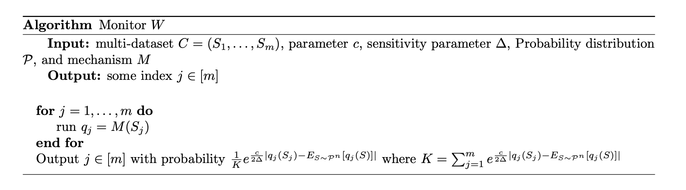

The Monitor Argument: 2. Proof Sketch
Oct 15, 2019
concentration
stability
differential privacy
adaptive data analysis
In the previous post, we went over three different settings and saw how they can all be understood under one unifying framework. In this post, we will first go over the high level proof sketch, and then we will prove all the lemmas that are not specific to the setting.
Proof Sketch
Here’s the statement that we want to prove: $$ \Pr_{S \sim \mathcal{P}^n, q = M(S)}\left( |q(S) - E_{S \sim \mathcal{P}^n} \left[ q(S) \right] | \ge \alpha \right) \le \beta. $$
We’ll proceed with proof by contradiction: suppose for the sake of contradiction that the above concentration doesn’t hold for some $\alpha$ and $\beta$.
$$ \tag{1} \Pr_{S \sim \mathcal{P}^n, q = M(S)}( |q(S) - E_{S \sim \mathcal{P}^n} \left[ q(S) \right] | \ge \alpha ) > \beta. $$
Now, we will construct a monitor $W$ and perform the following thought experiment. Take $m$ independent sample sets, $S_1, \dots, S_m$, and let it go through $M$ independently. This will produce $q_1(S_1), \dots, q_m(S_m)$. Assume that the monitor $W$ actually has access to the underlying distribution $\mathcal{P}$; normally, we don’t have access to the distribution $\mathcal{P}$, and this is precisely why we refer to this as a thought experiment. Hence, the monitor can actually find $j \in [m]$ whose answer is furthest apart from its expectation $E_{S}[q_j(S)]$ – in other words, $W$ may output $\argmax_{j \in [m]} |q_j(S_j) - E_{S}\left[ q_j(S) \right]|$. However, instead of exactly outputting the index $j$ with the biggest difference from its expected value, we will have each index be chosen with probability exponentially proportional to the difference. That is, $$\Pr( W(S_1, \dots, S_m) = j) \propto e^{\frac{c}{2\Delta} |q_j(S_j) - E_{S}\left[ q_j(S) \right]|},$$ where $c$ is some parameter we can choose and $\Delta$ is the sensitivity of the queries – that is, for any neighboring dataset $S$ and $S’$, $|q(S) - q(S’)| \le \Delta$. We will write $W_c$ whenever we want to surface the parameter $c$. Note that the index with the biggest difference is still most likely to be chosen, but we are still allowing for other possibility for other indices to be chosen here. We’ll discuss why we have the monitor output the index in this ‘stable’ way instead of just outputting the most violated index. Let $j^* = W(S_1, \dots, S_m)$ denote the index that is output by the monitor $W$.
Now, our goal will be to derive a contradiction by lower-bounding and upper-bounding the expected difference for $j^*$.
$$ B_L < E_{S_1, \dots, S_m, W}[|q_{j^* }(S_{j^* }) - E_{S} \left[ q_{j^* }(S)| \right]] < B_U$$ where $B_L > B_U$.

To derive the bounds, our strategy will be as follows:
- Using (1), we can show the lower-bound $B_L$ can’t be too small.
- Using the stability of $M$ and $W$, we can show that $B_U$ can’t be too big.
The only part that is specific to each application is showing that $B_U$ has to be sufficiently small, as that will need to leverage how $M$’s stability is defined.
Lemmas
Once again, our goal here is to bound $B_L$. We will first lower bound the maximum difference $D_{max} := \max_{j \in [m]} |q_j(S_j) - E_{S}\left[ q_j(S) \right]|$ through our contradiction assumption in (1). Then, we will show that the monitor $W$ outputs $j^*$ whose difference is pretty close to $D_{max}$, thereby bounding $B_L$ in expectation.
Lemma 1. If inequality (1) is true, $$E_{W, S_1, \dots, S_m}\left[D_{max}\right] > \alpha \left( 1 - \left(1 - \beta\right)^m \right)$$
Proof: (click here)
From (1), we have that with probability at most $1-\beta$, $|q_j(S_j) - E_{S}\left[ q_j(S) \right]| < \alpha$ for any $j \in [m]$. Because each $j$th run in the monitor is independent of each other, we have that with probability $\left(1 - \beta\right)^m$, $$ |q_j(S_j) - E_{S}\left[ q_j(S) \right]| < \alpha, \forall j \in [m].$$ In other words, with probability $1-\left(1 - \beta\right)^m$ there exists at least some $j’ \in [m]$ whose difference is more than $\alpha$. Therefore, in expectation, the max difference must be more than $\alpha \left( 1 - \left(1 - \beta\right)^m \right).$
$\square$
Now, we show that in expectation, $j^*$ has a difference not too mush smaller than $D_{max}$. The following lemma simply follows from the fact that exponential mechanism preserves utility up to some additive error in expectation.
Lemma 2. Fix $C = (S_1, \dots, S_i, \dots, S_m)$ and $q_j = M(S_j)$ for all $j \in [m]$. Also, let $\Delta$ be the sensitivity of the queries: $|q_j(S) - q_j(S’)| \le \Delta$ for any neighboring dataset $S$ and $S’$. Then, we have $$E_{W_{c}}[|q_{j^*}(S_{j^*}) - E_S [ q_{j^*}(S)] | | C, \lbrace q_j \rbrace_{j=1}^m] \ge D_{max} - \frac{2 \Delta \ln m}{c}.$$
Proof: (click here)
We have that $$\Pr\left(W_c ( C ) = j \right) = \frac{1}{K} e^{\frac{c}{2\Delta} |q_j(S_j) - E_{S}\left[ q_j(S) \right]|},$$ where $K=\sum_{j=1}^m e^{\frac{c}{2\Delta} |q_j(S_j) - E_{S}\left[ q_j(S) \right]|}$.
Rearranging some terms and suppressing the conditional term just for notation simplicity, we get $$ |q_j(S_j) - E_{S}\left[ q_j(S) \right]| = \frac{2\Delta}{c}\left( \ln K + \ln \Pr\left(W_c ( C ) = j\right) \right).$$
Now, consider the expected difference for $j^*$. $$ \begin{aligned} E_{W_{c}}[|q_{j^*}(S_{j^*}) - E_S [ q_{j^*}(S)] |] &= \sum_{j=1}^m \Pr(W_c = j) \cdot |q_{j}(S_{j}) - E_S [ q_{j}(S)] | \nl &= \sum_{j=1}^m \Pr(W_c = j) \cdot \frac{2\Delta}{c}\left( \ln K + \ln \Pr\left(W_c ( C ) = j\right) \right) \nl &= \frac{2\Delta \ln K }{c} + \frac{2\Delta}{c} \sum_{j=1}^m \Pr(W_c = j) \cdot \ln \Pr\left(W_c ( C ) = j\right) \nl &\ge \frac{2\Delta \ln K }{c} - \frac{2\Delta \ln m}{c}, \end{aligned} $$ where the last inequality follows from the fact that Shannon entropy of a set of size $m$ is at most $\ln m$: $\sum_{j=1}^m \Pr(W_c = j) \cdot -\ln \Pr\left(W_c ( C ) = j\right) \le \ln(m)$.
Finally, note that $$\ln K = \ln \sum_{j=1}^m e^{\frac{c}{2\Delta} |q_j(S_j) - E_{S}\left[ q_j(S) \right]|} \ge \ln \max_{j\in [m]} e^{\frac{c}{2\Delta} |q_j(S_j) - E_{S}\left[ q_j(S) \right]|} \ge \max_{j \in [m]} \frac{c}{2\Delta} |q_{j}(S_{j}) - E_S [ q_{j}(S)] |.$$
Therefore, $E_{W_{c}}[|q_{j^*}(S_{j^*}) - E_S [ q_{j^*}(S)] |] > D_{max} - \frac{2\Delta \ln m}{c}.$
$\square$
Combining Lemma 2 and 3, we can show the lower bound $B_L$.
Lemma 3. If inequality (1) is true, $$ \alpha \left( 1 - \left(1 - \beta\right)^m \right) - \frac{2 \Delta \ln m}{c} < E_{S_1, \dots, S_m, W}[|q_{j^* }(S_{j^* }) - E_{S} \left[ q_{j^* }(S)| \right]] $$
Proof: (click here)
$$ \begin{aligned} E_{S_1, \dots, S_m, M, W}[|q_{j^* }(S_{j^* }) - E_{S} \left[ q_{j^* }(S)| \right]] &> D_{max} - \frac{2\Delta\ln m}{c} \nl &> \alpha \left( 1 - \left(1 - \beta\right)^m \right) - \frac{2\Delta\ln m}{c} \end{aligned} $$ Because Lemma 2 holds for any fixed $C = (S_1, \dots, S_i, \dots, S_m)$ and $q_j = M(S_j)$ for all $j \in [m]$, the inequality must hold true in expectation as well.
$\square$
Lastly, we show that $W_c$ is $c$-differentially private; this lemma is just showing that exponential mechanism is differentially private.
Lemma 4. Fix $C = (S_1, \dots, S_i, \dots, S_m)$ and $\tilde{C} = (\tilde{S}_1, \dots, \dots, \tilde{S}_m)$, where $S_j$ and $\tilde{S}_j$ differ in at most one element. Also, fix $q_j = M(S_j)$ for all $j \in [m]$.
Then, we have $$ \Pr\left(W_c ( C ) = j | C, \lbrace q_j \rbrace_{j=1}^m \right) \le e^{c} \Pr\left(W_c(\tilde{C}) = j | \tilde{C}, \lbrace q_j \rbrace_{j=1}^m \right)$$
Proof: (click here)
For any $j$, $$ \begin{aligned} &\frac{\exp(\frac{c}{2\Delta} |q_{j}(S_{j}) - E_S [ q_{j}(S)] |)}{\exp(\frac{c}{2\Delta} |q_{j}(\tilde{S}_{j}) - E_S [ q_{j}(S)]|)} \nl &\le \exp(\frac{c}{2\Delta} |q_{j}(S_{j}) - q_{j}(\tilde{S}_{j})| ) \nl &= \exp(\frac{c}{2}). \end{aligned} $$
Also, define $\tilde{K} = \sum_{j=1}^m e^{\frac{c}{2\Delta} |q_j(\tilde{S}_j) - E_{S}\left[ q_j(S) \right]|}$. $$ \begin{aligned} \tilde{K}=\sum_{j=1}^m e^{\frac{c}{2\Delta} |q_j(\tilde{S}_j) - E_{S}\left[ q_j(S) \right]|} \le \sum_{j=1}^m e^{\frac{c}{2}} e^{\frac{c}{2\Delta} |q_j(S_j) - E_{S}\left[ q_j(S) \right]|} = \exp(\frac{c}{2}) K. \end{aligned} $$
Combining the inequalities together, we get $$ \frac{\Pr\left(W_c ( C ) = j | C, \lbrace q_j \rbrace_{j=1}^m \right)}{\Pr\left(W_c(\tilde{C}) = j | \tilde{C}, \lbrace q_j \rbrace_{j=1}^m \right)} \le \frac{\exp(\frac{c}{2\Delta} |q_{j}(S_{j}) - E_S [ q_{j}(S)] |)}{\exp(\frac{c}{2\Delta} |q_{j}(\tilde{S}_{j}) - E_S [ q_{j}(S)]|)} \cdot \frac{\tilde{K}}{K} \le \exp( c ). $$
$\square$
Chernoff Bound & Adaptive Data Analysis
We’ll finish off the proof for the case when $M$ is $(\epsilon, \delta)$-differentially private. Note that for the Chernoff bound case, because $M$ always outputs the same query, $q_{avg}$, $M$ is essentially $(0,0)$-differentially private.
For the purpose of simplicity, let’s only consider statistical queries, meaning each $q(S) = \sum_{i=1}^n q(x_i)$. Note that the sensitivity of statistical queries is $\frac{1}{n}$.
Lemma 5. If $M$ is $(\epsilon, \delta)$-differentially private, then
$$E_{S_1, \dots, S_m, j^*=W_c(S_1, \dots, S_m)}[ |q_{j^*}(S_{j^*}) - E_{S}[q_{j^*}(S)|] \le e^{c+\epsilon}-1 + m \delta$$
Proof: (click here)
Let $S_j(i)$ denote $i$th element of $S_j$. Then, we have
$$
\begin{aligned}
&E_{S_1, \dots, S_m, j^*=W_c( C )}[q_{j^*}(S_{j^*})] \nl
&= \sum_{C, \lbrace q_j \rbrace_{j=1}^m} \Pr( C ) \cdot \Pr(\lbrace q_j \rbrace_{j=1}^m | C) \cdot \sum_{j=1}^m \Pr(W_c ( C ) = j | C, \lbrace q_j \rbrace_{j=1}^m) \cdot \frac{1}{n} \sum_{i=1}^n q_j(S_j(i)) \nl
&= \frac{1}{n} \sum_{C, x, \lbrace q_j \rbrace_{j=1}^m} \sum_{j=1}^m \sum_{i=1}^n \Pr( C, x ) \cdot \Pr(\lbrace q_j \rbrace_{j=1}^m | C) \cdot \Pr(W_c ( C ) = j | C, \lbrace q_j \rbrace_{j=1}^m) \cdot q_j(S_j(i)),
\end{aligned}
$$
where $x \in \mathcal{X}$ is just an element independently drawn from $\mathcal{P}$.
Let’s introduce a new notation, $C_{(i,j) \to x}$, which is essentially $C$ except $i$th element in the $j$th sample set is swapped with $x$. $$C_{(i,j) \to x} := (S_1, \dots, \tilde{S}_j, \dots, S_m)$$ where $\tilde{S}_j(a) = S_j(a)$ for $a \in [n]$ except that $x$ is swapped in for the $i$th element.
Now, let’s take a look at the summand $$ \begin{aligned} &\Pr( C, x ) \cdot \Pr(\lbrace q_j \rbrace_{j=1}^m | C) \cdot \Pr(W_c ( C ) = j | C, \lbrace q_j \rbrace_{j=1}^m) \cdot q_j(S_j(i)) \nl &\le \Pr( C, x ) \cdot (e^\epsilon \Pr(\lbrace q_j \rbrace_{j=1}^m | C_{(i,j) \to x}) + \delta) \cdot \Pr(W_c ( C ) = j | C, \lbrace q_j \rbrace_{j=1}^m) \cdot q_j(S_j(i)) \nl &\le \Pr( C, x ) \cdot e^\epsilon \Pr(\lbrace q_j \rbrace_{j=1}^m | C_{(i,j) \to x}) \cdot \Pr(W_c ( C ) = j | C, \lbrace q_j \rbrace _{j=1}^m) \cdot q_j(S_j(i)) + \delta\nl &\le \Pr( C, x ) \cdot e^{\epsilon+c} \Pr(\lbrace q_j \rbrace_{j=1}^m | C_{(i,j) \to x}) \cdot \Pr(W_c ( C_{(i,j) \to x} ) = j | C_{(i,j) \to x}, \lbrace q_j \rbrace_{j=1}^m) \cdot q_j(S_j(i)) + \delta, \end{aligned} $$ where the first inequality comes from the fact that $M$ is $(\epsilon, \delta)$-differentially private and the last inequality is due to lemma 4.
Plugging this back in, we get $$ \begin{aligned} &E_{S_1, \dots, S_m, j^*=W_c( C )}[q_{j^*}(S_{j^*})] \nl &\le \frac{1}{n} e^{\epsilon + c} \sum_{j=1}^m \sum_{i=1}^n E_{C, x, W_c}[\mathbf{1}(W_c(C_{(i,j) \to x}) = j) \cdot q_j(S_j(i))] + m\delta \nl \end{aligned} $$
Here’s one of my favorite tricks! Note that $(C,x)$ is identitically distributed as $(C_{(i,j) \to x}, S_j(i))$, so the above value is equivalent to
$$ \begin{aligned} &=\frac{1}{n} e^{\epsilon + c} \sum_{j=1}^m \sum_{i=1}^n E_{C, x, W_c}[\mathbf{1}(W_c(C = j) \cdot q_j(x)] + m\delta \nl &= e^{\epsilon + c} E_{C, x, W_c}[q_j(x)] + m\delta = e^{\epsilon + c} E_{S}[q_j(S)] + m\delta \end{aligned} $$
The same argument can be used to prove the opposite direction as well. Therefore, we get $$E_{S_1, \dots, S_m, j^*=W_c(S_1, \dots, S_m)}[|q_{j^*}(S_{j^*}) - E_{S}[q_{j^*}(S)|] \le e^{\epsilon + c}-1 + m \delta$$
$\square$
Now, here’s our long awaited theorem! You can refernece these notes as to how I set some of the constants here.
Theorem 1. If $M$ is $(\epsilon, \delta)$-differentially private for $\epsilon \le \frac{1}{5}$, then
$$ \Pr_{S \sim \mathcal{P}^n, q = M(S)}\left( |q(S) - E_{S \sim \mathcal{P}^n} \left[ q(S) \right] | \ge \alpha \right) \le \max(\frac{4\delta}{\epsilon}, e^\frac{-\epsilon^2 n}{8}). $$
Proof: (click here)
Combining lemma 3 and lemma 5, we get
$$
\alpha \left( 1 - \left(1 - \beta\right)^m \right) - \frac{2\Delta\ln m}{c} < E_{S_1, \dots, S_m, W}[|q_{j^* }(S_{j^* }) - E_{S} \left[ q_{j^* }(S)| \right]] \le e^{c+\epsilon}-1 + m \delta
$$
Set $\alpha=6\epsilon$, $c=\epsilon$, and $m = \frac{1}{\beta}$. Also, since we are considering statistical queries, $\Delta = \frac{1}{n}$
In that case, the left hand side becomes $$ \begin{aligned} \alpha \left( 1 - \left(1 - \beta\right)^m \right) - \frac{2\Delta\ln m}{c} &< e^{c+\epsilon}-1 + m \delta \nl 6\epsilon \left( 1 - \left(1 - \beta\right)^{m} \right) - \frac{2\ln \frac{1}{\beta}}{n \epsilon} &< e^{2\epsilon}-1 + \frac{\delta}{\beta} \tag{$*$} \nl 6\epsilon - 4\frac{\ln(\frac{1}{\beta})}{\epsilon n} &< 2(e^{2\epsilon}-1) + \frac{2\delta}{\beta} \nl 6\epsilon - 2(e^{2\epsilon}-1) &< 4\frac{\ln(\frac{1}{\beta})}{\epsilon n} + \frac{2\delta}{\beta} \nl \epsilon &< 4\frac{\ln(\frac{1}{\beta})}{\epsilon n} + \frac{2\delta}{\beta}. \end{aligned} $$
For $(*)$, we used the fact that $\left( 1 - \left(1 - \beta\right)^{m} \right) \ge \frac{1}{2}$ because $\left(1 - \beta\right)^{\frac{1}{\beta}} \le e^{-\beta m} \le \frac{1}{2}$ for $\beta < \frac{1}{4}$. As for the last inequality, we used the fact that $\epsilon \le 6\epsilon - 2(e^{2\epsilon}-1)$ for $\epsilon < \frac{1}{5}$.
Now, either $4\frac{\ln(\frac{1}{\beta})}{\epsilon n}$ or $\frac{2\delta}{\beta}$ must be greater than $\frac{\epsilon}{2}$. In other words, $\beta < \max(\frac{4\delta}{\epsilon}, e^\frac{-\epsilon^2 n}{8})$.
Therefore, there’s a contradiction if $\beta \ge \max(\frac{4\delta}{\epsilon}, e^\frac{-\epsilon^2 n}{8})$.
$\square$
Uniformly stable algorithms
Remember in this case, $q_{f}(S) = L(f, S)$, where $f$ is the classifier returned by the algorithm, and $L$ measures the empirical error on $S$.
Before in the Chernoff bound and adaptive analysis case, we could fix the queries $q$ even as we change the underlying multi-dataset $C$ by one element because differentially private mechanisms are random and the probability of getting the same query doesn’t change by much. However, in this case, the queries are deterministically determined as a function of $C$. Hence, if we change $C$, we necessarily have to change the queries as well and can’t just analyze some other fixed queries. However, it can be shown that even as we change an element of $C$, the difference $|q_j(S_j) - E_{S}\left[ q_j(S) \right]|$ has a sensitivity of $2\gamma + \frac{1}{n}$. Hence, a similar version of lemma 2 and lemma 3 can be shown for this case. So, in terms its utility, we have $$ E_{C}[\max_{j \in [m]}|q_j(S_j) - E_{S}\left[ q_j(S) \right]|] \le E_{C}[E_{j^* = W_c( C )}[|q_j(S_j) - E_{S}\left[ q_j(S) \right]|] + \frac{2 (2\gamma + \frac{1}{n})}{c} \ln(m), $$ and we have that given $C$, $W_c$ is still private.
Now, we can employ the same swapping technique as in lemma 5. It’s just that in this case, there’s an additional cost $\gamma$ in this case.
Lemma 7. If the algorithm has a uniform stability of $\gamma$, then
$$E_{S_1, \dots, S_m, j^*=W_c(S_1, \dots, S_m)}[|q_{j^*}(S_{j^*}) - E_{S}[q_{j^*}(S)]|] \le e^{c}-1 + \gamma$$
Proof: (click here)
We introduce a similar swapping notation as lemma 5. Let $(S \to (i,x))$ denote a new sample set where the $i$th element is swapped with $x$.
$$ \begin{aligned} &E_{S_1, \dots, S_m, j^*=W_c( C )}[q_{j^*}(S_{j^*})] \nl &= \sum_{C} \Pr( C ) \cdot \sum_{j=1}^m \Pr(W_c( C ) = j) \cdot q_{Alg(S_j)}(S_j) \nl &= \sum_{C,x} \Pr( C, x) \cdot \sum_{j=1}^m \Pr(W_c( C ) = j) \cdot \frac{1}{n}\sum_{i=1}^n q_{Alg(S_j)}(S_j(i)) \nl &= \frac{1}{n} \sum_{C,x} \sum_{j=1}^m \sum_{i=1}^n \Pr( C, x) \cdot \Pr(W_c( C ) = j | C) \cdot q_{Alg(S_j)}(S_j(i)) \nl &\le \sum_{C,x} \sum_{j=1}^m \sum_{i=1}^n \Pr( C, x) \cdot e^c \Pr(W_c( C_{(i,j) \to x} ) = j | C_{(i,j) \to x}) \cdot q_{Alg(S_j)}(S_j(i)) \nl &\le \sum_{C,x} \sum_{j=1}^m \sum_{i=1}^n \Pr( C, x) \cdot e^c \Pr(W_c( C_{(i,j) \to x} ) = j | C_{(i,j) \to x}) \cdot (q_{Alg(S \to (i,x))}(S_j(i)) + \gamma) \nl &= \frac{1}{n}\sum_{j=1}^m \sum_{i=1}^n e^c E_{S_1, \dots, S_m, x}[\mathbf{1}(W_c( C_{(i,j) \to x})=j) \cdot q_{Alg(S \to (i,x))}(x)) + \gamma] \nl \end{aligned} $$ where $x \in \mathcal{X}$ is just an element independently drawn from $\mathcal{P}$. Note that unlike before, the query here is chosen deterministically as we change an element in the multi-dataset $C$ within the monitor.
Once again, note that $(C,x)$ is identitically distributed as $(C_{(i,j) \to x}, S_j(i))$, so the above value is equivalent to
$$ \begin{aligned} =e^c(E_{S_1, \dots, S_m, x, j^*=W_c( C )}[q_{j^*}(x)] + \gamma) =e^c(E_{S_1, \dots, S_m, j^*=W_c( C )}[ E_{S}[q_{j^*}(S)] + \gamma) \end{aligned} $$
The same argument can be used to prove the opposite direction as well. Therefore, we get $$E_{S_1, \dots, S_m, j^*=W_c(S_1, \dots, S_m)}[|q_{j^*}(S_{j^*}) - E_{S}[q_{j^*}(S)]|] \le e^{c}-1 + \gamma$$
$\square$
Combining these together, we get
Theorem 2. If $Alg$ is $\gamma$-uniformly stable, then
$$\Pr_{S \sim \mathcal{P}^n, f = Alg(S)}\left(|L(f, S) - E_{S \sim \mathcal{P}^n} \left[ L(f, S) \right] | > 8 \sqrt{\left(2\gamma + \frac{1}{n}\right) \cdot \ln\left(\frac{8}{\beta}\right) } \right) \le \beta$$
Proof: (click here)
Here, unlike before, let’s actually fix $\beta$ and find out which $\alpha$ gives rise to contradiction.
Combining the lower bound and the upper bound, we get $$ \alpha \left( 1 - \left(1 - \beta\right)^m \right) - \frac{2 (2\gamma + \frac{1}{n})}{c} \ln(m) < E_{S_1, \dots, S_m, W}[|q_{j^* }(S_{j^* }) - E_{S} \left[ q_{j^* }(S)| \right]] \le e^{c}-1 + \gamma $$
Further, reorganizing some terms and setting $m=\frac{e\ln(2)}{\beta}$, $c=\sqrt{(2\gamma + \frac{1}{n}) \cdot \ln(\frac{e\ln(2)}{\beta})}$, we get $$ \begin{aligned} \alpha \left( 1 - \left(1 - \beta\right)^m \right) - \frac{2 (2\gamma + \frac{1}{n})}{c} \ln(m) &< e^{c}-1 + \gamma \nl \alpha \left( 1 - \left(1 - \beta\right)^m \right) &< \frac{2 (2\gamma + \frac{1}{n})}{c} \ln(m) + e^{c}-1 + \gamma \nl \alpha (1-e^{-\beta m}) &< \frac{2 (2\gamma + \frac{1}{n})}{c} \ln(m) + e^{c}-1 + \gamma \nl \alpha (1-e^{\ln(2)}) &< \frac{2 (2\gamma + \frac{1}{n})}{c} \ln(m) + e^{c}-1 + \gamma \nl \frac{\alpha}{2} &< \frac{2 (2\gamma + \frac{1}{n})}{c} \ln(m) + e^{c}-1 + \gamma \nl \alpha &< \frac{4 (2\gamma + \frac{1}{n})}{c} \ln(m) + 2(e^{c}-1 + \gamma) \nl \end{aligned} $$
Note that $\alpha \ge 2c$ so the bound holds trivially when $c \ge \frac{1}{2}$. Otherwise, $(e^c - 1) \le 2c$. Therefore,
$$ \alpha < 8 \sqrt{\left(2\gamma + \frac{1}{n}\right) \cdot \ln\left( \frac{e\ln(2)}{\beta} \right)} \le 8 \sqrt{\left(2\gamma + \frac{1}{n}\right) \cdot \ln\left( \frac{8}{\beta} \right)}. $$
because $\gamma \le \sqrt{\gamma}$.
Therefore, we reach contradiction if $\alpha$ is greater than or equal to the value above.
$\square$